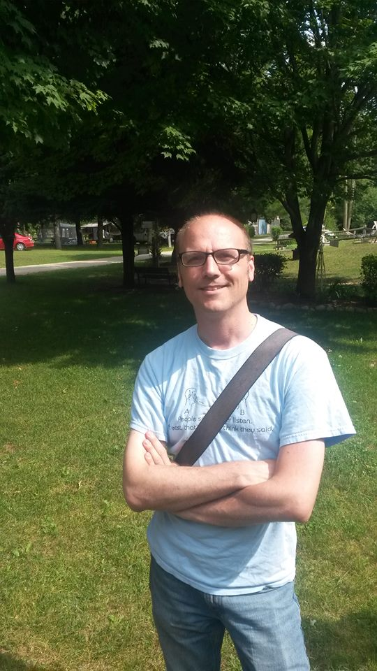

| I am a professor in the English Department at Sogang University. I am interested in syntactic theory, the syntax-semantics interface, and the syntax-prosody interface. I have worked mostly on Iroquoian and on Algonquian, but have also worked in English, Cantonese, Korean, Tamang, Tagalog, Mongolian, and Romance. | My spot on the linguistics academic tree My Google Scholar profile |
||
| Division of English Sogang University 35 Baekbom-ro, Mapo-gu, 04107 Room J829 Seoul, Republic of Korea tel: 02-705-7950 (inside Korea) 82-2-705-7950 (outside Korea) |
 |
영문학부 서강대학교 대한민국 04107 서울특별시 마포구 백범로 35 정하상관 829 02-705-7950 |
|
| CV and papers | Teaching | Current Conference Handouts | Personal |
| SICOGG 24 | ||
| SICOGG 23 | ||
| The 25th Workshop of Structure and Constituency in Languages of the Americas | ||
| Nominals at the Interfaces |